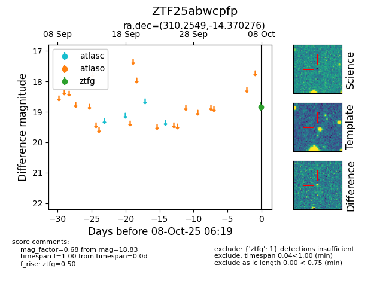

FINK: ZTF25abwcpfp
Lasair: ZTF25abwcpfp
ALeRCE: ZTF25abwcpfp
ZTF25abwcpfp (ztf,fink)
equatorial (ra, dec) = (310.2549,-14.37028)
galactic (l, b) = (31.7571,-30.65486)

last ztfg=18.83
1 ztfg detections